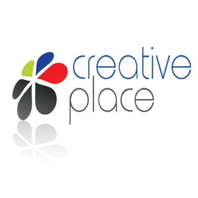
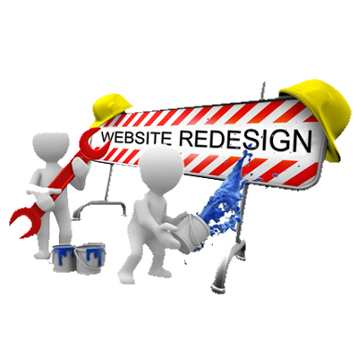

HOME > SERVICE
Our Services
WEB
DESIGN
We create an optimised and responsive web design which easy to handle on any devices (like mobile, tablets, laptop ). we built your website beyond your expectation.It's important that your website looks good to engage your visitors, allowing your website to become successful and meet the goals for growing your bussiness.
Web
Development
I can develop all kinds of websites according to your reqiurement, also allowing them to remain unique. Your website will perform quick loading, and user friendly, also provide a better experience for you and your users. Think and describe your idea, I can perform my best to transform into reality.
SEARCH ENGINE
OPTIMIZATION
SEO is short for search engine optimization. Search engine optimization is a methodology of strategies, techniques and tactics used to increase the amount of visitors to a website by obtaining a high-ranking placement in the search results page of a search engine (SERP) -- including Google, Bing, Yahoo and other search engines.It is common practice for Internet search users to not click through pages and pages of search results, so where a site ranks in a search Play Slideshowresults page is essential for directing more traffic toward the site.
Graphic
Design
Marketing Without Design is Lifeless and Design without Marketing is Mute." I love creative problem solving. That‘s why I can take an idea from concept to delivery in design, marketing and print. Everything design-related and promotional including print, stationery, brochures, sell sheets, presentations, and displays. I can help to create a striking, crafting a personality, and building a trustworthy character that carries across all mediums.

Logo
Design
Your logo is your identity. Your logo will help you create a distinctive brand. Logo of a company plays an important role in the advertisement of the company. That’s why i work closely with you in order to ascertain what your business is about and who your target audience is. We’ll provide you with a range of logo designs, each tailored to your business. We’ll work with you from start to finish, and ensure that your final logo is an emblem for life
Website
Redesign
Website redesign is an important aspect in increasing the life of a website. If you have a website and you are looking for change due to out of date, or it may be you perhaps want to upgrade some new features or look and feel /design. I can help you to create a new website from your old existing website.
